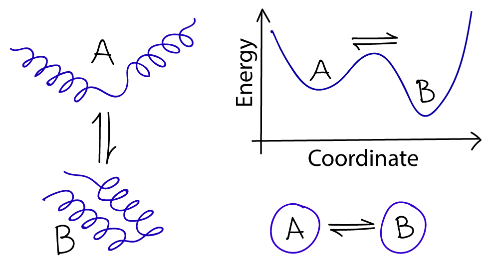
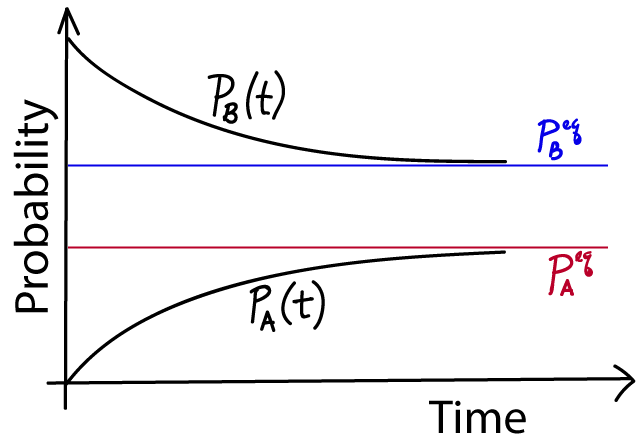
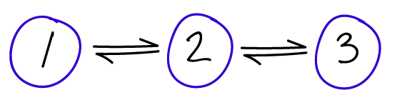
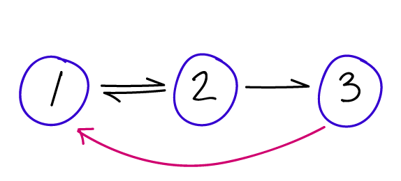
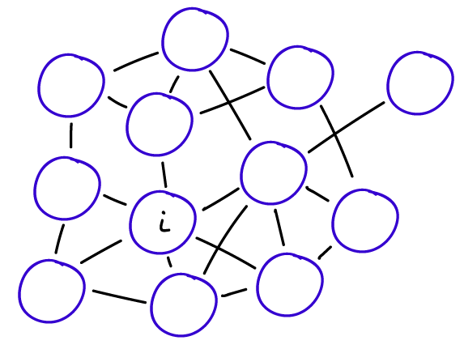

We know that cells must be non-equilibrium systems. They use energy that originates in their environments. They take in certain molecules from that environment and expel others. They control processes that proceed overwhelmingly in a single direction. This website provides numerous examples of the molecular machinery which implements some of these processes: active transport, biochemical synthesis, error correction in translation. We also explore the physics of non-equilibrium steady state systems in a general way.
Here we want to examine the math and physics underlying all machine-like systems in a fully general way to deepen our understanding of kinetic processes. Elsewhere on the site, we explored the basics of a continuum description of non-equilibrium processes using both simple diffusion and its generalization to more complex energy landscapes via the Fokker-Planck/Smoluchowski picture. However, the Fokker-Planck/Smoluchowski mathematical formalism has some drawbacks for describing molecular machines and signaling systems: it operates in continuous space, where it's difficult to construct tractable models of cellular function, and also the ensuing equations can only be solved exactly in very simple cases.
We therefore will study discrete-state systems now. Although many of the basic concepts of chemical (discrete-state) kinetics are simple, the math that describes them quickly becomes complicated. Here, we will study the simplest possible systems, starting with just two states $A \lr B$. We will attempt to provide a thorough mathematical treatment, in order to understand both the physics and the math as much as possible.

In chemical notation, we write a reversible reaction between two states, A and B, as follows: \begin{equation} A \underset{k_{BA}}{\stackrel{k_{AB}}{\rightleftharpoons}} B \label{abchem} \end{equation} where $k_{AB}$ is the reaction rate constant for the transition from A to B and likewise for $k_{BA}$. Theese are standard first-order rate constants within a mass action picture. In other words, they represent transition probabilities per unit time, and hence have units of inverse seconds. They are rate constants because they are (i) unchanging in time and (ii) assumed independent of the concentrations of any species present. (You should assume, however, that the rate constants will change with conditions such as pH or temperature.)
The equation \eqref{abchem} is really a short-hand for a precise set of differential equations: \begin{align} \frac{ d \conc{A} }{ dt } &= - \conc{A} \, \kab + \conc{B} \, \kba \nonumber \\ \frac{ d \conc{B} }{ dt } &= \conc{A} \, \kab - \conc{B} \, \kba \label{abdifeqconc} \end{align} where $\conc{X} = N_X / V$ is the number of molecules in state X divided by the volume - i.e., the concentration of molecules in state X. These equations govern the behavior of the two concentrations as functions of time.
For mathematical convenience, we will consider an equivalent set of equations written in terms of the state probabilities $P_X(t)$ which make it easier to indicate the dependence on time $t$ explicitly. $P_X$ is simply the fraction $N_X/N$ of molecules in state X, where $N=N_A+N_B$ is the total number of molecules, which in turn implies we are assuming every molecule is either in state A or B so that \begin{equation} P_A(t) + P_B(t) = 1 \; . \label{fixedtot} \end{equation} After multiplication by $V/N$, the governing differential equations \eqref{abdifeqconc} then become \begin{align} \frac{ d P_A }{ dt } &= - P_A(t) \, \kab + P_B(t) \, \kba \nonumber \\ \frac{ d P_B }{ dt } &= P_A(t) \, \kab - P_B(t) \, \kba \label{abdifeq} \end{align} where the rate constants have the same meaning as above.
Before we give the exact solution to the equations \eqref{abdifeq}, there are a couple of things to observe about them. First, because they are equivalent to mass action equations, they implicitly assume the rate constants are independent of state concentrations. This is not necessarily true, however. We can imagine that in state A, for instance, the molecules tend to aggregate which might inhibit (slow down) the transition to state B at large $\conc{A}$ values. In our mathematical treatment, which is fully standard, we will ignore this possibility.
Second, there is something funny about the set of equations \eqref{abdifeq} - which occurs for many such system of mass-action equations. Try summing the two equations, and you will find the right-hand sides sum to zero. This tells us that the sum of the left-hand sides must also vanish: $d ( P_A + P_B) / dt = 0$. Is this true? Yes!! In fact, in Eq. \eqref{fixedtot} we already saw that the sum of the concentrations was unchanging in time, which immediately implies that its time derivative vanishes. So there's no mistake here, but this strange property of the sum of the two differential equations is actually telling us that one of the equations is unnecessary. The two equations are not independent because of the constraint on the sum of $P_A$ and $P_B$. There are indeed two unknown functions of time, $P_A(t)$ and $P_B(t)$, but the two equations determining the time dependence of the $P_X$ functions in fact are \eqref{fixedtot} and either one of equations \eqref{abdifeq}.
How do we get the solution? First notice that the system of equations \eqref{abdifeq} has first derivatives on the left-hand side and is linear in the probabilities on the right-hand side. Given that, we know (from experience) that the solution will somehow be exponential in time: think of an equation like $dc/dt = -kc$, which implies $c(t) \sim e^{-kt}$. Moreover, we know that the solutions must decay from their (arbitrary) initial values $P_A(0)$ and $P_B(0)$ to their equilibrium values. All this essentially constrains the solutions to be: \begin{align} P_A(t) &= \paeq + \left[ P_A(0) - \paeq \right] e^{-kt} \nonumber \\ P_B(t) &= \pbeq + \left[ P_B(0) - \pbeq \right] e^{-kt} \label{abtime} \end{align} where $k = \kab + \kba$. The equilibrium values $\paeq$ and $\pbeq$ can be found from the governing equations \eqref{abdifeq} by setting the time derivatives to zero and also using \eqref{fixedtot}, leading to \begin{equation} \paeq = \kba / (\kab + \kba) \hspace{1cm} \pbeq = \kab / (\kab + \kba) \label{peq} \end{equation}
The "meaning" of the solutions \eqref{abtime} can be easily understood. At time $t=0$, the exponential $e^{-kt}=1$ which leads to the cancellation of the $\peq$ terms, and thus the correct initial values remain. Then this initial value "decays" - smoothly changes, either up or down - until the equilibrium value is reached at large $t$ when $e^{-kt} \to 0$. Note that this is simple exponential decay, so there is no oscillation, just a smooth change.

You have just learned the first and most important lesson of non-equilibrium statistical mechanics! Procedurally, we just solved simple differential equations, but conceptually we see something absolute critical: the probabilities relax to their equilibrium values exponentially - and on a timescale given by the transition rates. Even if we had 100 states, we would see a similar relaxation to equilibrium, so long as there was no input or removal of probability. More generally, as we'll see soon, a system will tend to relax exponentially to a steady state (that may not be equilibrium) so long as it's possible to achieve a steady state.
In our two-state case defined by the equations \eqref{abdifeq}, the steady state is equilibrium, as you can verify because the steady values \eqref{peq} satisfy detailed balance, and hence there is zero net flow. However, even a two-state system could be in a non-equilibrium steady state, with a net flow, if probability were continually added to A and removed from B, for example. State A could be substrate and B product in a synthesis reaction, for example.

Many important ideas can be understood from a two state system, but a three-state system can bring in some of the richness of more realistic multi-state system ... while still permitting exact calculations. Corresponding to the figure, the governing equations are \begin{align} \frac{ d\pu }{ dt } &= -\pu \kud + \pd \kdu \nonumber \\ \frac{ d\pd }{ dt } &= -\pd \left( \kdu + \kdt \right) + \pu \kud + \pt \ktd \nonumber \\ \frac{ d\pt }{ dt } &= -\pt \ktd + \pd \kdt \label{threedt} \end{align} Don't forget that here, and throughout, $P_i = P_i(t)$ even when the time dependence is not written explicitly. These equations can also be solved exactly, although the algebra is much more complicated than the two-state case.
Hopefully you can guess, more or less, how the solutions will look and how they can be obtained. The time dependence will again be exponential but now a second timescale will enter in - i.e., two exponentials. (Below, we will calculate these two timescales.) As in the two-state case, there will be exponential relaxation to the equilirium populations, which themselves can be determined by the ratios of rate constants for connected states along with the normalization requirement.
Also, for a system which cannot leak probability, there is always a normalization condition \begin{equation} \sum_i P_i = 1 \; , \label{norm} \end{equation} which is a sum over all states that holds at any/every time $t$, including a steady state or equilibrium that may result at large $t$.
Although the time dependence is complicated, we can calculate the equilibrium populations without too much trouble. The "official" way to do it would be to use any two of the three equations \eqref{threedt} with time derivatives set equal to zero, along with the normalization condition \eqref{norm}, as the system of three equations in the three unknowns $\peq_i$. However, in a linear system we can figure out the solutions essentially by looking at the detailed balance conditions \eqref{detbal}, which read $\peq_1 \, \kud = \peq_2 \, \kdu$ and $\peq_2 \, \kdt = \peq_3 \, \ktd$. The only way for these conditions to hold is if each equilibrium population is proportional to the "opposite" rate - e.g., $\peq_1 \propto \kdu$ - and note that state 2 has two such opposite states. These considerations, along with the normalization condition \eqref{norm}, lead to \begin{equation} \peq_1 = \left. \kdu \ktd \right/ \sigeq \hspace{0.7cm} \peq_2 = \left. \kud \ktd \right/ \sigeq \hspace{0.7cm} \peq_3 = \left. \kud \kdt \right/ \sigeq \label{equil_three} \end{equation} where $\sigeq$ is the sum of the three numerators to ensure the probabilities sum to one. If it's not obvious to you that these satisfy detailed balance, go ahead and check them directly by multiplying by the appropriate rate constants.

The concept of a non-equilibrium steady state (NESS) is of critical importance in understanding biology. The cell is far from equilibrium and the NESS can be used to model processes ranging from catalysis to locomotion to "kinetic proofreading", which is a form of error correction occurring in protein transcription and translation. Therefore, we will take the opportunity to make an exact calculation on the three-state NESS sketched in the figure. Our three-state system is the simplest interesting NESS. (One can construct a NESS with a two-state system but it's not really interesting.)
For the model pictured, state 1 is the source and state 3 is the sink. This means that systems are started in state 1 and each time one reaches state 3, it is re-started back in 1. Think of an enzyme catalyzing a substrate, with state 1 corresponding to the unbound reactant state, state 2 to the enzyme-substrate complex, and state 3 to unbound enzyme and product. That's just a conceptual picture, however; for simplicity, we will not consider any concentration effects here. Concentration effects can be readily included in the mass-action picture by noting that the product of a steady concentration and binding rate is effectively an ordinary first-order rate constant such as those we're using.
Time-dependent equations for the source-sink system can easily be written down by noting that the sink state 3 does not permit transitions back to state 2, and transition from 2 to 3 are immediately fed back to 1. Thus, the probability of state 3 is always zero by construction - as is generally true for a sink state - and state 1 effectively receives additional transition that would have gone to three. This means our NESS model requires only two equations. \begin{align} \frac{ d\pu }{ dt } &= -\pu \kud + \pd ( \kdu + \kdt ) \nonumber \\ \frac{ d\pd }{ dt } &= -\pd \left( \kdu + \kdt \right) + \pu \kud \label{threedtsource} \end{align} You should compare these equations to the preceding set \eqref{threedt} to see the differences. It's also worthwhile to notice that this pair of equations is mathematically identical to the two-state equations \eqref{abdifeq}, except one of the rate constants has two terms in it.
We can solve for the NESS itself by setting the time derivatives to zero in equations \eqref{threedtsource} and using the normalization of probabilities to find \begin{equation} \pss_1 = \left( \kdu + \kdt \right) / \, \sigss \hspace{0.7cm} \pss_2 = \kud / \, \sigss \hspace{0.7cm} \pss_3 = 0 \; , \label{ness_three} \end{equation} where $\sigss$ is the sum of the numerators to ensure normalization. These NESS values, which do not satisfy detailed balance, should be compared to the equilibrium probabilities \eqref{equil_three}.
To gain some physical insight, consider the simplest model where all rate constants are equal. In the equilibrium case, all the probabilities will be equal, but in the NESS, state 1 will have twice the probability of state 2. Because the sink state constantly drains probability, states closer to it will be more reduced in probability.
Qualitatively, we can say that all systems "try" to relax toward equilibrium, but in some cases, the "boundary conditions" such as source/sink prevent that from happening. The result can be a continuous flow and a non-equilibrium steady state. The cell has evolved numerous ways to siphon off usable free energy from the resulting flows. Without these flows - of molecules, of chemical transitions, of conformational transitions - our cells could not function.
The final, and perhaps most important, quantity to consider in a non-equilbrium steady state is the current flowing through it - which will be non-zero, unlike in equilibrium. The probability current, or flux as it might be called, tells us how quickly a process - such as catalysis or motor-protein movement - is happening. The probabilty part might seem strange for describing biochemical systems, but the probability current is just the rate of events. The current could be more or less than one, depending on how fast a process occurs: a current greater than one doesn't violate any proability laws, but merely reflects that more than one event occurs per second. (The current could also be negative, but this only depends on the defintion of the positive direction.)
The current $\jij$ between two states $i$ and $j$ is the net flow between the states - the difference between forward and reverse. That is, \begin{equation} \jij = P_i \kij - P_j \kji \; , \label{jdef} \end{equation} which you should realize is zero by construction in detailed balance. Thus, this pairwise current is a measure of the deviation from equilibrium.
The current in a linear system has a special property. In a NESS, the current between every successive pair of nodes must be the same. If it's not the same, then the probabilities will change - indicating it was not a steady state, and which in turn will change the currents until they match. This steady current in a linear system with only near-neighbor transitions is simply derived from any neighboring pair of states by substituting the steady values $\pss_i$ and $\pss_{i+1}$ into \eqref{jdef} with $j=i+1$.
Systems which are capable of supporting a non-equilibrium steady state (NESS) will relax to that NESS, much in the same way that we saw the two-state system would relax to its steady state, which was equilibrium. That is, in general, a system's initial condition at $t=0$ won't be a steady state, but it will relax over time to that steady state.
For our three-state source-sink system defined by Eqns. \eqref{threedtsource}, we can solve for that time dependence exactly. In fact, it's easy. If you look at the governing equations, they have the same form as the two-state equations \eqref{abdifeq} except the rate constants are different. This means that we can basically copy the solutions \eqref{abtime} replacing the rate constants. Defining $q = \kud + \kdu + \kdt$, we have \begin{align} P_1(t) &= \pss_1 + \left[ P_1(0) - \pss_1 \right] e^{-q\, t} \nonumber \\ P_2(t) &= \pss_2 + \left[ P_B(0) - \pss_2 \right] e^{-q\, t} \nonumber \\ P_3(t) &= \pss_3 = 0 \label{threetime} \end{align} As promised, these populations decay to their steady values exponentially with time.
The time constant $q$ tells its own interesting story, if you're really dedicated to understanding time dependence. First, remember that $q$ is the only time constant for this system - it governs all the relaxation we see in \eqref{threetime}. Now observe that since $q$ is a sum of rates, it will be dominated by the largest - i.e.., fastest - rates. In other words, for the relaxation to be fast, there only has to be one fast rate among the three which define the system; surprisingly, a single large barrier between either pair of states doesn't make the relaxation slow. As we'll briefly sketch below, this is not true for relaxation to equilibrium in the three-state case, where a slow pair of rate constants will always slow relaxation to equilibrium. See the discussion of eigenvalues in the three-state case.
To derive the transition matrix, first note that the time $t=0$ isn't a special physical time (it's not the beginning of the universe!) but simply a reference point, or the time we started "watching" our system. In other words, the system will evolve according to the equations \eqref{abtime} based on any time we decide to call zero. We can therefore rewrite these equations as if $t$ itself were the initial time and we examine the system after a time increment $\tau$. \begin{align} P_A(t+\tau) &= \paeq + \left[ P_A(t) - \paeq \right] e^{-k\tau} \nonumber \\ P_B(t+\tau) &= \pbeq + \left[ P_B(t) - \pbeq \right] e^{-k\tau} \label{abtau} \end{align}
Additional re-arrangement is necessary to get to a matrix formulation, which requires the probabilities at time $t+\tau$ as a linear combination of those at $t$. We expect such a linear dependence might be possible because the governing differential equations \eqref{abdifeq} indicate that the time evolution of the system depends only on the rate constants and the state probabilities. In our algebra, we therefore make use of the fact that $P_A(t) + P_B(t) = 1$ for any $t$; in particular, we use a classic "trick" of multiplying by one (written as the sum of $P_A$ and $P_B$) to find the terms we seek, as follows. \begin{align} P_A(t+\tau) &= P_A(t) \, e^{-k\tau} + \paeq \left[ 1 - e^{-k\tau} \right] \big[ P_A(t) + P_B(t) \big] \nonumber \\ &= P_A(t) \Big[ e^{-k\tau} + \paeq \left( 1-e^{-k\tau} \right) \Big] + P_B(t) \Big[ \paeq \left(1-e^{-k\tau}\right) \Big] \nonumber \\ &= P_A(t) \Big[ \left( \left.\kba + \kab \, e^{-k\tau} \right) \right/ k \, \Big] + P_B(t) \Big[ \kba \left. \left( 1 - e^{-k\tau} \right) \right/ k \, \Big] \label{ataumix} \end{align} Above, the second line is obtained from the first by re-arranging terms, whereas the third line used the explicit equilibrium probabilities \eqref{peq}.
We can use \eqref{ataumix} to write down the transition matrix, which will prove to be a very powerful computational and conceptual tool. First we can obtain the analog of \eqref{ataumix} for $P_B(t+\tau)$ simply by swapping A and B indices because the states differ only by those labels and not in any fundamental way. We can then use the defintion of matrix multiplication to recast both expressions as \begin{align} \begin{bmatrix} P_A(t+\tau) \\ P_B(t+\tau) \end{bmatrix} &= \begin{bmatrix} ( \kba + \kab \, e^{-k\tau} ) / k & \kba ( 1 - e^{-k\tau}) / k \\ \kab ( 1 - e^{-k\tau}) / k & ( \kab + \kba \, e^{-k\tau} ) / k \end{bmatrix} \begin{bmatrix} P_A(t) \\ P_B(t) \end{bmatrix} \nonumber \\ \pcol(t+\tau) &= \tmat \, \pcol(t) \label{tmatrix} \end{align} where $\pcol$ (with no subscripts) is the column matrix of state probabilities and $\tmat$ is the transition matrix shown.
The form of Eq \eqref{tmatrix} means that $\tmat$ is a left stochastic matrix and it has a straightforward physical meaning: each element $\tji$ is a conditional probability for transitioning from state $i$ to $j$ in time $\tau$. More precisely, it is the conditional probability to be in $j$ after a time interval $\tau$. The $\tji$ elements do not report on whether state $j$ may have been visiting during the interval $\tau$ - but only indicate the probability to be in $j$ at the end of the $\tau$ interval. Also, note the ordering of indices ($\tji = \tel_{j \leftarrow i}$), which is just a consequence of the definition of matrix multiplication and has no deep meaning. For instance, the second element of the first row is the probability to transition from B to A.
In general, the transition matrix alters the probability vector based on the definition of matrix multiplication, \begin{equation} P_i(t+\tau) = \sum_j \tij P_j(t) \label{pitau} \end{equation} (where $i$ = A or B here) which tells us that the occupancy of $i$ "inherits" some fraction of probability from each state, including $i$ itself. Because of this meaning of $\tmat$, each column of the matrix must be normalized - i.e., the elements sum to 1 - which you can check for our two-state case \eqref{tmatrix}. The normalization means that all the probability that starts in a given state $i$ must go somewhere (including perhaps back to $i$ itself): \begin{equation} \sum_j \tji= 1 \;. \label{tnorm} \end{equation} This point is sometimes emphasized by noting that the diagonal terms $T_{ii}$, which correspond to "self transitions" (remaining in the same state), must comprise all probability left over after accounting for transitions to other states ($j \neq i$): $T_{ii} = 1 - \sum_{j \neq i} \tji$ .
By the way, a more precise but cumbersome notation would be $\tji(\tau)$ but we will usually keep $\tau$ implicit in $\tmat$.
You have already noticed that in general $\tji \neq \kij$ even when $i \neq j$, which is because the rate constants $\kij$ refer to infinitesimal time increments whereas the transition matrix $\tmat$ applies to an arbitrary finite length of time $\tau$. Correspondingly, the rate constants $\kij$ also have different units - probability per unit time instead of just probability for $\tji$. We can understand this better by examining two limiting cases.
Examining the transition matrix \eqref{tmatrix} in the small $\tau$ limit, based on $e^{-k\tau} \approx 1 - k \tau$, shows that it corresponds to our intuition and the meaning of the rate constants $k_{ij}$ as transition probabilities per unit time. \begin{equation} \tmat (\mathrm{small} \; \tau) = \begin{bmatrix} 1 - \kab \, \tau & \kba \, \tau \\ \kab \, \tau & 1 - \kba \, \tau \end{bmatrix} \label{tmatsmalltau} \end{equation} Thus, for example, the probability to transition from A to B in a very short amount of time is $\kab \, \tau$ and hence the probability to remain in A is $1 - \kab \, \tau$. By the way, what is a "small" value of $\tau$ here? It means that $\tau$ is smaller than other timescales in the system, which in our case are $\kab^{-1}$ and $\kba^{-1}$.
In the large $\tau$ limit, something quite different happens. The exponential terms in \eqref{tmatrix} vanish as $\tau \to \infty$ and we have \begin{equation} \tmat (\mathrm{large} \; \tau) = \begin{bmatrix} \kba / k & \kba / k \\ \kab / k & \kab / k \end{bmatrix} \label{tmatlargetau} \end{equation} If you use this large-$\tau$ transition matrix in Eq \eqref{tmatrix} and recall that $P_A(t) + P_B(t) = 1$ for any $t$, you will see that after a long time increment, the equilibrium probabilities \eqref{peq} are always reached - regardless of the probabilities at the starting time $t$. (This holds so long as there are no sources or sinks of probability.)
Can the transition matrix $\tmat$ be derived in a simple way from the $\kij$ rate constants? Well, yes and no. The process involves matrix exponentiation and is explored in an exercise below.
The matrix formulation easily provides long-time information, both for arbitrary multiples of $\tau$ and for the $\tau \to \infty$ limit. From \eqref{tmatrix}, we already know that $\pcol(t+\tau) = \tmat \, \pcol(t)$, and so we can iterate this process. For one more step, by the rules of matrix multiplication, we have $\pcol(t+2\tau) = \tmat \, \pcol(t+\tau) = \tmat^2 \pcol(t)$ and more generally, \begin{equation} \pcol(t+n\tau) = \tmat^n \pcol(t) \label{tn} \end{equation} This relation is true for any number of states.

Most systems of interest have more than two or three states. Even though most of the necessary physical understanding is in the discussion above, it is valuable to appreciate a more general formulation.
Assume now that we have $N$ discrete state: $1,2, \ldots, N$, which will be usually indexed by $i$ or $j$. Likewise assume there are transition rate constants between each pair of states $\kij$. Each state $i$ now will lose probability to multiple other states $j$ due to non-zero $\kij$ rates, but $i$ can also gain probability based on $\kji$ rates. Based on the defintion of $\kij$ as the conditional transition probability per unit time, we can therefore write down what is known as the master equation: \begin{equation} \frac{dP_i}{dt} = - \sum_{j \neq i} P_i \, \kij + \sum_{j \neq i} P_j \, \kji \label{masteri} \end{equation} which holds for each state $i$. Here and throughout, the sums hold over all values of the indices, except as noted; for example, if $N=4$ and $i=2$, then the sums above would include $j = 1, 3, 4$. Also note that there is no "self" ($ii$) transition rate constant defined, because the differential equation \eqref{masteri} already accounts for all the possible transitions - of course, some probability will remain in $i$ at every point in time, but this is accounted for implicitly. (Accordingly, the set of rates $\kij$ are not elements of a stochastic matrix, unlike the $\tel_{ij}$ defined above.)
Note that some transition rates may be zero, indicating certain transitions are not possible. In a physically precise description of a system, if $\kij = 0$ then the reverse rate $\kji = 0$ also, but this condition can be neglected in approximate, irreversible descriptions: see discussion of the Michaelis-Menten model of enzyme kinetics. We will assume that every pair of the $N$ states is connected by some sequence of non-zero rate constants; if this is not the case, the system will not be ergodic and connected subsets should be analyzed separately.
The master equation can be re-written in a compact matrix form, which will prove useful: \begin{equation} \frac{ d \pcol }{ dt } = - \kmat \pcol \label{mastermat} \end{equation} where the elements of the column vector $\pcol$ are the state probabilities $P_i$. The elements of the rate matrix $\kmat$ are given by $K_{ij} = - \kji$ for $i \neq j$ and $K_{ii} = \sum_{j \neq i} \kij$. To be clear, Eq. \eqref{mastermat} is exactly the same as \eqref{masteri}, only in matrix form.Let's write down the rate matrices for the (linear) two and three-state systems corresponding to Eqs. \eqref{abdifeq} and \eqref{threedt}. Using the rules for the $K_{ij}$ elements given above, we have \begin{equation} \begin{bmatrix} \kab & -\kba \\ -\kab & \kba \end{bmatrix} \label{ktwo} \end{equation} and \begin{equation} \begin{bmatrix} \kud & -\kdu & 0 \\ -\kud & \kdu+\kdt & -\ktd \\ 0 & -\kdt & \ktd \end{bmatrix} \label{kthree} \end{equation} You can check that these indeed reproduce the correct governing differential equations.
The general solution of the time-dependence of the probabilty vector which starts at $\pcol(0)$ at $t=0$ is given by the exponential of a matrix: \begin{equation} \pcol(t) = \exp ( -\kmat \, t ) \, \pcol(0) \label{expkmat} \end{equation} We will not derive this result, but you can imagine it's a generalization of the exponential behavior we saw above. An exercise below explains the matrix exponential if you are not familiar with it.
Importantly, if you compare Eq \eqref{expkmat} with \eqref{tmatrix}, you will realize that transition matrix for an arbitrary multistate system must therefore be given by \begin{equation} \tmat(\tau) = \exp ( -\kmat \, \tau ) \label{tmatrixmulti} \end{equation}
The definition of a steady state, that $d P_i / dt = 0$ for every state $i$, together with Eq. \eqref{mastermat} leads to the matrix equation \begin{equation} \kmat \pss = 0 \label{steadydef} \end{equation} where $\pss$ is the vector of steady probabilities, and here "$0$" means a column vector of all zeroes. Unfortunately, this matrix equation (i.e., set of $N$ linear equations for the $N$ unknowns $\pss_i$) can't simply be punched into your favorite computational tool and solved. The reason is the one we noted above for the two-state system: not all of the equations are truly independent. To solve the system numerically, it's necessary to delete any one of the linear equations and replace it with the normalization equation $\sum_i \pss_i = 1$. After doing that, you can re-make the system as a matrix and use your favorite solver and find the $\pss_i$ values.
An eigenvalue/eigenvector analysis gives a lot of insight into timescales of a system defined by a master equation. You may have noticed that \eqref{steadydef} is in fact an eigenvalue equation for the special case of a zero eigenvalue. More generally, the master-equation eigenvalue relation is written as \begin{equation} \kmat \eveca = \evala \eveca \label{evaldef} \end{equation} and \eqref{steadydef} corresponds to $\eval_0 = 0$ and $\evec_0 = \pss$. All of the other eigenvalues of a standard transition matrix will be positive; we will not prove that here, but it is a requirement for avoiding exponential growth that ultimately would violate normalization \eqref{norm}. Note that Eq. \eqref{evaldef} is equivalent to \begin{equation} \left( \kmat - \eval \imat \right) \evec = 0 \; , \label{evaleqn} \end{equation} where $\imat$ is the identity matrix and we have omitted the subscripts.
For the two-state system, the rate-matrix eigenvalue equation is \begin{equation} \begin{bmatrix} \kab - \lambda & -\kba \\ -\kab & \kba - \lambda \end{bmatrix} u = \begin{bmatrix} 0 \\ 0 \end{bmatrix} \label{ktwoeval} \end{equation} The condition for a solution to such an equation is that the determinant of the square matrix should be zero, so we have \begin{equation} (\kab-\lambda)(\kba-\lambda) -\kba \kab = \lambda [\lambda - (\kab+\kba)] = 0 \; . \label{evalstwo} \end{equation} Hence, the two eigenvalues for the two-state system are $\lambda = 0$ and $\lambda = \kab + \kba$. Note that if we want the eigenvectors themselves, we need to substitute the $\lambda$ values, one at a time, into \eqref{ktwoeval} and solve the two resulting linear equations for each component of each eigenvalue.
Have we learned anything new? Well, we already knew from Eq. \eqref{abtime} that the time constant for exponential relaxation was $k = \kab + \kba$. But now we see that the very same value can be derived from the eigenvalue picture. And reassuringly, one of the eigenvalues is zero, corresponding to the steady state (defined by unchanging proabilities) - which in our two-state model is equilibrium.
Computing eigenvalues by hand for more complex systems becomes increasingly challenging. We just saw that the eigenvalue equation \eqref{evalstwo} for the two-state system is quadratic, and generally the number of states dictates the number of eigenvalues. For reference, we'll note the three-state eigenvalues (linear system: $k_{13} = k_{31} = 0$), which result from a cubic equation that has an overall factor of $\lambda$ and hence leads to a quadratic equation. The three eigenvalues are \begin{equation} \lambda = 0, \; \frac{1}{2} \left[ \kud + \kdu + \kdt + \ktd \pm \sqrt{ ( \kud + \kdu - \kdt - \ktd )^2 + 4 \kdu \kdt } \right] \label{evalskthree} \end{equation} There are some interesting insights that can be gleaned from this equation, but most importantly note that both non-zero eigenvalues must be positive. This is important for the system to exhibit exponential decay to steady state, rather than exponential growth. To see why both solutions must be positive, start by noticing that after multiplying out everything under the square-root sign, the cross-terms (factors of, e.g., $\kdu \kdt$) that remain will have a mix of coefficients that are all $\pm 2$; and since all rate constants are positive, the magnitude of the square root must be less than that of the sum of the four rate constants appearing outside the square root - see this by squaring the latter.
Second, the relaxation to equilibrium is more likely to be slow if some of the rate constants are slow - but this is not necessarily true for the corresponding NESS. Consider the case where two rate constants are fast and two are slow, say $\kud \approx \kdu \gg \kdt \approx \ktd$. Then Eq. \eqref{evalskthree} shows that the eigenvalue obtained from subtracting the square root will be small, close in value to the smaller rate constants because the larger ones cancel out: see this by Taylor-expanding the square-root function. Hence if there is a large barrier between either pair of states, the relaxation to equilibrium has to be slow. This can be contrasted to the relaxation to a source-sink NESS under the same assumptions for the relative rates: note that $q$ from Eq. \eqref{threetime} will be large if any of the three rates is large (fast), implying faster relaxation in the NESS compared to equilibrium.
Now, we'll try to understand the eigenvectors, which in turn will help us understand eigenvalues a bit better. The key point is that eigenvectors are vectors and there are as many of them ($N$) as we have variables $\pss_i$. It turns out that these vectors can be thought of as axes of our system - in the sense of, e.g., $x$ and $y$ axes for a normal two dimensional system. In our case, there happen to be $N$ dimensions. Mathematicians have shown these eigenvectors are a "basis" - i.e., any vector can be represented as a linear combination of them.
Writing an arbitrary probability vector in terms of the eigenvector "axes" turns out to be very convenient and illuminating. Let's consider the probability vector at $t=0$, written as a weighted sum of eigenvectors \begin{equation} \pcol(0) = \sum_\alpha \ca \eveca , \end{equation} where the $\ca$ coefficients would have to be calculated for any particular $\pcol(0)$ - but assume that has been done. Each $\ca$ represents the fraction of $\pcol(0)$ oriented along the $\eveca$ "axis" - i.e., the part similar to $\eveca$; think of the $x, y, z$ components of a vector in real space. The time evolution of this initial distribution, using Eq \eqref{expkmat}, is given by \begin{align} \pcol(t) &= \exp(-\kmat \, t) \sum_\alpha \ca \eveca \nonumber \\ &= \sum_\alpha \ca \exp(-\kmat \, t) \, \eveca \nonumber \\ &= \sum_\alpha \ca \exp(-\evala \, t) \, \eveca \label{pvecexp} \end{align} where the second equality is just distributing the overall prefactor throughout the sum and the third is based on the definition of the matrix exponential and the definition \eqref{evaldef} of the eigenvectors - every multiplication of the rate matrix $\kmat$ and $\eveca$ leads to a factor of $\evala$.
Seeing the time dependence of $\pcol(t)$ in terms of exponentials in \eqref{pvecexp} yields a fairly clear explanation of the eigenvalues and vectors. First note that it can be shown (though we won't) that eigenvalues are non-negative. Then we can see that the component along each $\eveca$ eigenvector decays in time according to the relaxation time given by the inverse of the eigenvalue $\evala$. Hence some eigenvectors represent motion along slow "directions" in the state space - which you should think of as slow transitions based on whatever the underlying physics/dynamics may be.
Not all the components can decay away in time. After all, the total probability must always sum to one. In fact, one "direction" - i.e., one (eigen)vector of probabilities - does not decay away, and that is the steady-state vector $\pss$ which has $\eval = 0$ as noted in Eq. \eqref{steadydef}. In other words, $\pss$ is one $\eveca$, corresponding to $\evala=0$ - though the index $\alpha$ is arbitrary and not meaningful.
Let's consider the steady state again, but using the transition matrix $\tmat$. In steady state, the probability will not change when operated on by $\tmat$, so we must have \begin{equation} \tmat \pss = \pss \label{tmatsteady} \end{equation} You should recognize this as another eigenvalue equation - this time corresponding to an eigenvalue of 1.
If you think about it, this is perfectly consistent with the zero eigenvalue for $\pss$ in the rate-matrix picture. We know from Eq. \eqref{tmatrixmulti} that $\tmat$ is an exponential of $\kmat$. So if $\kmat \pss = 0$, then $\exp(-\kmat \tau) \pss = \exp(0) \pss = \pss$ for any $\tau$. That is, the eigenvalue of $\tmat$ is somehow an exponential of the corresponding eigenvalue of $\kmat$.
We can make the relationship between the $\tmat$ and $\kmat$ eigenvalues and vectors more precise just by doing some algebra. Let's see what happens when the transition matrix operates on a general eigenvector of $\kmat$, and here it's important to remember that $\tmat$ always depends on the time interval $\tau$ at which transitions are being examined, so we'll write it as $\tmat(\tau)$. We find \begin{align} \tmat(\tau) \, \eveca &= \exp(-\kmat \tau) \, \eveca \nonumber \\ &= \exp(-\evala \tau) \, \eveca \nonumber \\ &\equiv \tvala \, \eveca \end{align} where we used the matrix exponentiation explored in some of the exercises below. Importantly, the first and last lines together make up the eigenvalue/vector definition for the transition matrix! Hence we immediately find that the eigenvectors of $\tmat$ are identical to those of $\kmat$, as we already saw for the special case of the steady probability vector. In general, the $\tmat$ eigenvalue $\tvala = e^{-\evala \tau}$ is given by the exponential of the corresponding $\kmat$ eigenvalue. As we saw before, the steady eigenvalue $\eval = 0$ for $\kmat$, corresponds to $\tval = 1$.
The fundamental timescales are embodied in the rate matrix $\kmat$ and its eigenvalues - and not (directly) in the $\tmat$ eigenvalues. Indeed, the two have different units, and only the $\eval$ values are inverse seconds. Think again of the steady-state $\kmat$ eigenvalue $\eval=0$, which appropriately corresponds to $t \to \infty$, in contrast to the corresponding $\tmat$ eigenvalue $\tval=1$. Also, the transition matrix $\tmat = \tmat(\tau)$is not a unique matrix but depends on the arbitrary choice of $\tau$. To obtain the true timescales ($1/\eval$) from $\tmat$ eigenvalues, we must therefore invert the exponential relationship noted above, yielding \begin{equation} \eval^{-1} = -\tau \left/ \ln\left(\tval\right) \right. \label{impliedtime} \end{equation} An inverse eigenvalue derived in this way is sometimes called an implied timescale because it is implict in the transition matrix $\tmat(\tau)$.
A key challenge for beginners is translating a bunch of algebra/calculus into physical intuition. Here is a high-level summary of the key lessons. You should be able to find the results above that back up these claims.
In the context of cell biology, why does this matter? In some sense, this is all that matters! Roughly speaking, cell-scale free energy - the driving force for all cellular processes - derives from systems continually (trying to) relax to equilibrium and in the process driving something useful for the cell. The physics you have learned here govern all subcellular processes to a very good approximation, even if we don't always know how to assign Markov states to experimentally observed situations. (For example, even in a single cell that could be observed at fairly high resolution with labeled molecule types, a given protein could exist in a mixture of states, perhaps based on variable phosphorylation.) More concretely, the physics treated here is more than enough to describe numerous fundamental cell-biology phenomena: active transport, biochemical synthesis, error correction in translation.